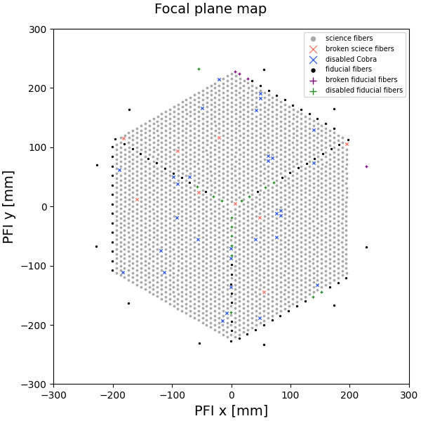
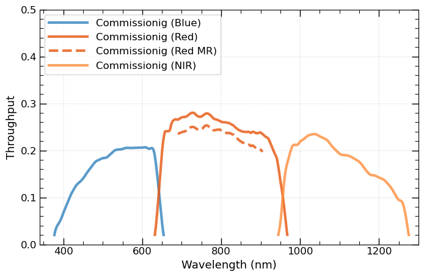

PFS Introduction
This webpage is mainly for introducing the information of Subaru Prime Focus Spectrograph (PFS) data reduction and data inspection. Regarding the Subaru PFS instrument, one can check more information on the PFS intrument page. Here, we selected the necessary information that you may need to understand the PFS pipeline.
If you have any questions regarding this tutorial, contact us at: pfs_helpdesk@ml.nao.ac.jp
Overview

The PFS instrument consists of several components. See also here.
Wide Field Corrector (WFC)
The WFC is an optical system consisting of 7 lenses designed to correct imaging aberrations for Hyper Suprime-Cam (HSC) and PFS. The largest lens has an effective area of 820 mm (32 inch) in diameter, and the total lens system is 1845 mm (73 inch) long.
Prime Focus Instrument (PFI)
Together with the WFC, the Prime Focus Instrument (PFI) is installed on the prime focus of the Subaru telescope.
The basic information about PFI is listed in the table:
| Component | Description |
|---|---|
| FOV | a ~1.25 deg² hexagon |
| Fiber Number | 2490 fibers |
| Types of Fibers | - 2394 science fibers: Movable, attached to actuators (fiber positioners). - 96 fiducial fibers: Fixed, used as position references. |
| Microlens on Fibers | Slows F-ratio to F/2.8 to reduce image degradation after passing through the fiber cable. |
| Field Element | - ~54 mm-thick glass plate in front of fibers. - Ensures same image quality as HSC. - Has opaque dots to block light and improve spectral analysis. |
| Imaging Cameras | Six cameras around the hexagonal field for sky-field acquisition and auto-guiding. |
| Calibration Lamps | Six lamps installed on top of PFI: - 1 quartz lamp (continuum). - 5 arc lamps (Kr, Ar, Ne, Xe, HgCd) for uniform illumination of the dome screen. |
Fiber Positioner ("Cobra")
Each science fiber tip is controllable in-plane by the fiber positioner, nicknamed "Cobra," which is a piezo actuator with two rotational axes. The fibers are arranged in a hexagonal pattern with 8 mm separation, with each fiber being able to cover a region of 9.5 mm in diameter. The overlap between adjacent regions enables 100% sky coverage within the hexagonal field.
Focal Plane Map
Fiber distribution on the PFI focal plane highlighting the broken/disabled fibers. See the legend for details.

Spectrograph System (SpS)
The four identical spectrograph modules provide the simultaneous measurement of ~2400 spectra. Each spectrograph module has three independent channels (blue, red, and near-infrared) separated by two dichroic mirrors so that the whole system can cover a wide wavelength range from 0.38 μm to 1.26 μm in one exposure. More related parameters are summarized in the table below:
| Parameter | Specification |
|---|---|
| Number of Modules | 4 |
| Channels per Module | 3 (Blue, Red, Near-Infrared) |
| Wavelength Coverage | 0.38 μm to 1.26 μm |
| Resolution | Low: ∼2300–4300 |
| Medium (Red Channel): ∼5000 | |
| Grating Type | Volume Phase Holographic (VPH) |
| Operating Temperature | 5 ± 1 °C |
The three channels are also called arms in the pipeline, and in the Red-arm, there are two chices of the resolutions (Low and Medium).
You can find the parameters listed below:
| Parameter | Blue | Red (Low Res.) | Red (Med Res.) | NIR |
|---|---|---|---|---|
| Spectral Coverage (nm) | 380 – 650 | 630 – 970 | 710 – 885 | 940 – 1260 |
| Dispersion (Å/pix) | ∼0.7 | ∼0.9 | ∼0.4 | ∼0.8 |
| Spectral Resolution (Å) | ∼2.1 | ∼2.7 | ∼1.6 | ∼2.4 |
| Resolving Power (R) | ∼2500 (@500nm) | ∼3000 (@800nm) | ∼5500 (@800nm) | ∼4500 (@1100nm) |
| Throughput (%) | ∼49% (@500nm) | ∼52% (@800nm) | ∼48% (@800nm) | ∼39% (@1100nm) |
The total throughputs of these channels:

Fiber System
The basic information about the Fiber System:
| Component | Description |
|---|---|
| Fiber System | ~2400 optical fibers relay light from the focal plane to four spectrographs in the clean room. |
| Fiber Cable | Divided into three parts for ease of development and operation: - PFI fiber modules: Includes "Cobra" positioners. - SpS fiber slit assembly: Integrated into the spectrograph system. - Long fiber cable: Routed on the telescope and in the dome building. |
| Fiber Length & Grouping | Each fiber is 65 meters long, assembled into four groups, with 600 inputs per spectrograph. |
| Monitoring Fibers | Additional fibers included to check connections during installation. |
Metrology Camera System (MCS)
The basic information about the Metrology Camera System (MCS):
| Component | Description |
|---|---|
| MCS | Attached to the Cassegrain Focus of the Subaru telescope to measure fiber positions at the prime focus. |
| Imaging Capability | Captures all ~2400 fibers in a single exposure using a large-format CMOS camera (8960 × 5778 pixels). |
| Primary Mirror | Diameter of 380 mm, designed to average out local surface errors of the WFC. |
Data FITS Header
PFS FITS Header Keywords
Examples of the FITS header for PFS data are accessible from the list below.
| Since | PFSA | PFSB | PFSC |
|---|---|---|---|
| 2024.05 | HeaderSample_PFSA.txt | HeaderSample_PFSB.txt | HeaderSample_PFSC.txt |
PFS instrument FITS cards
Latest (ics_actorkeys 1.6.22), etc.
Publications
- Naoyuki Tamura et al., "Prime Focus Spectrograph (PFS) for Subaru Telescope: progressing final steps to science operation", SPIE 13096, 1309605 (2024)
- Naoyuki Tamura et al., "Prime Focus Spectrograph (PFS) for the Subaru Telescope: its start of the last development phase", SPIE 12184, 1218410 (2022)
- Shiang-Yu Wang et al., "Prime focus spectrograph (PFS) for the Subaru Telescope: the prime focus instrument", SPIE 12184, 121846R (2022)
- Stephen A. Smee et al., "Performance of the near-infrared camera for the Subaru Prime Focus Spectrograph", SPIE 12184, 121847L (2022)
- Antonio Cesar de Oliveira et al., "Prime Focus Spectrograph (PFS): fiber optical cable and connector system (FOCCoS) - integration", SPIE 12184, 1218474 (2022)
- Neven Capler et al., "Prime focus spectrograph (PFS) for the Subaru Telescope: 2D modeling of the point spread function", SPIE 12184, 1218470 (2022)
- Shiang-Yu Wang, "Prime Focus Spectrograph (PFS): the metrology camera system", SPIE 11447 (2020)
- Alain Schmitt, AMAZED: Algorithm for Massive Automated Z Evaluation and Determination
- Hajime Sugai, "Prime Focus Spectrograph for the Subaru telescope: massively multiplexed optical and near-infrared fiber spectrograph", JATIS 1(3) 035001 (2015)
For more publications, please see here.